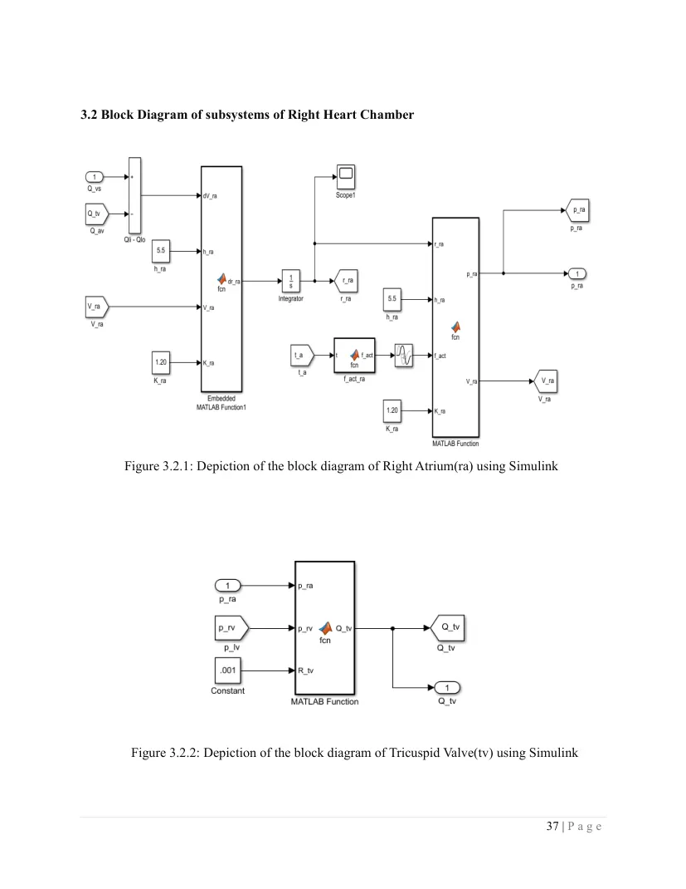
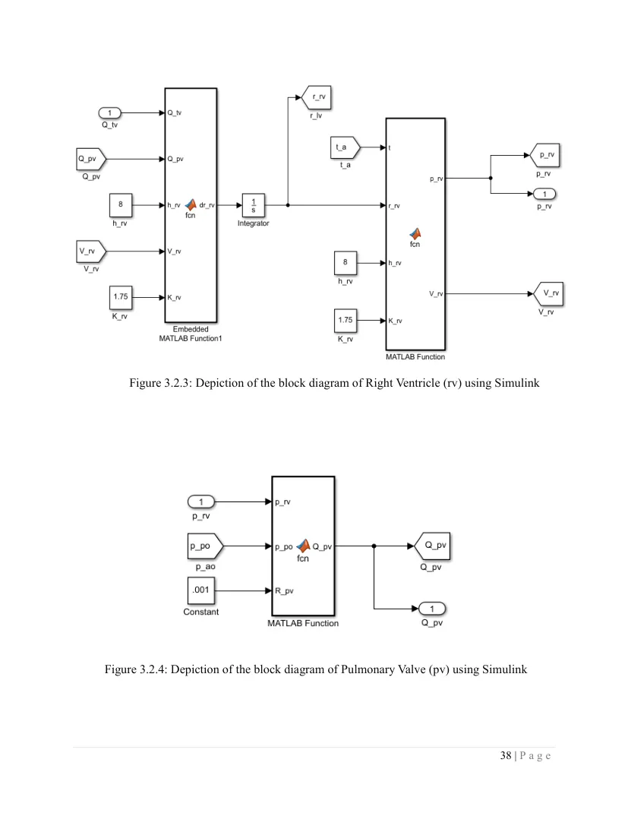
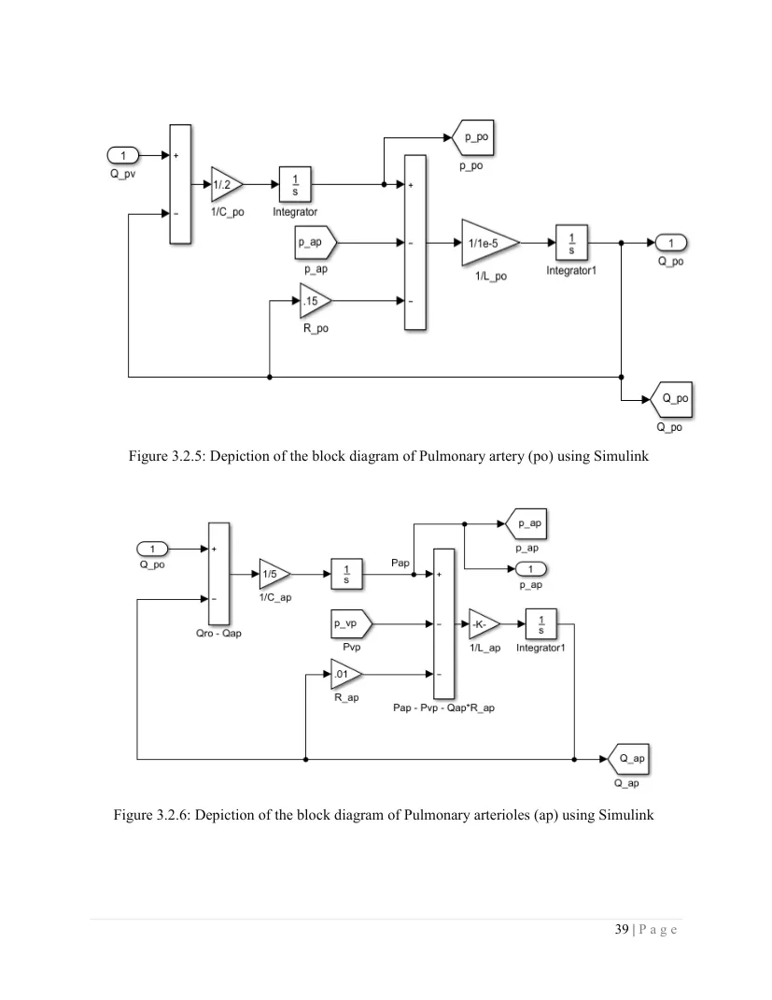
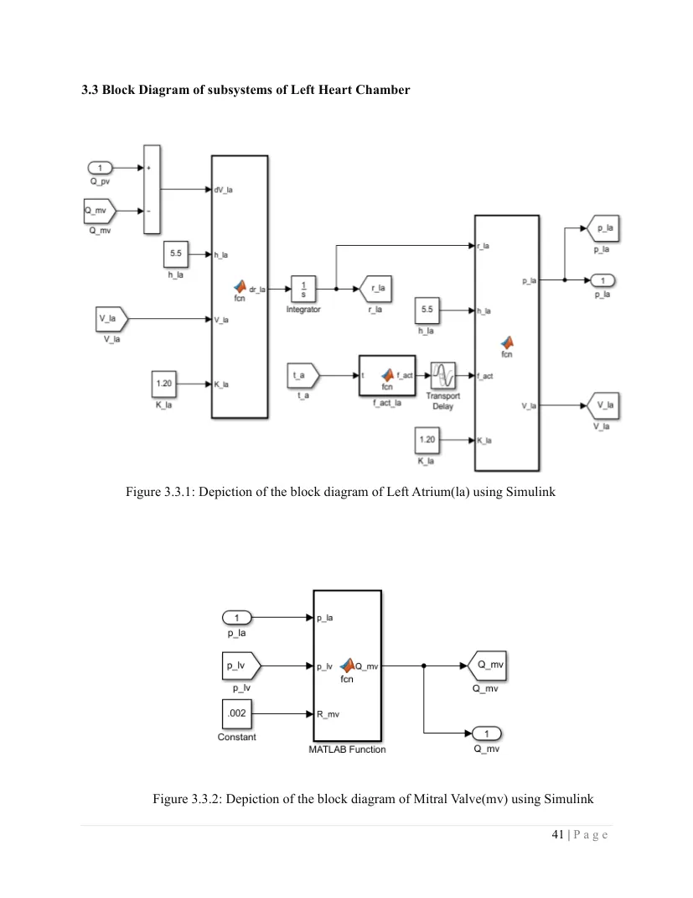
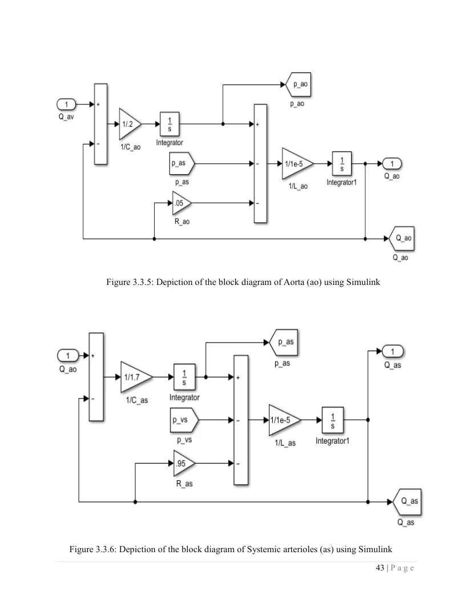
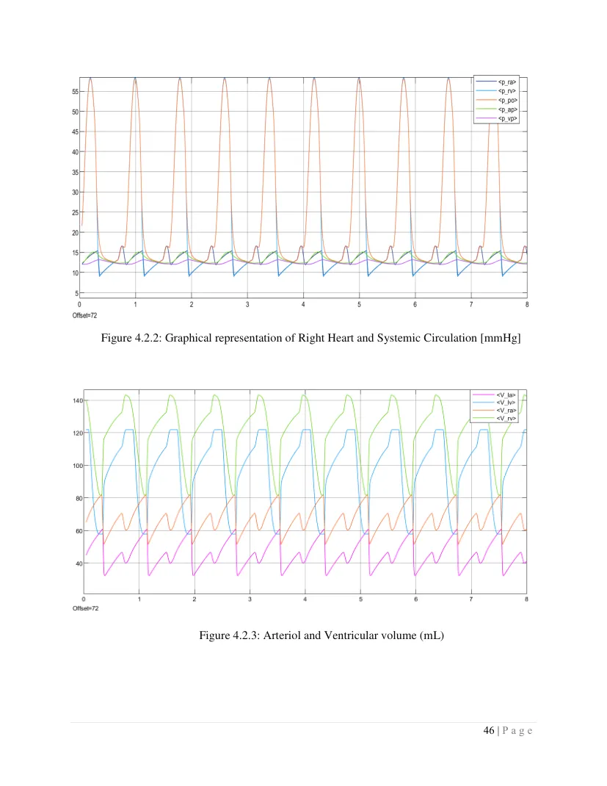
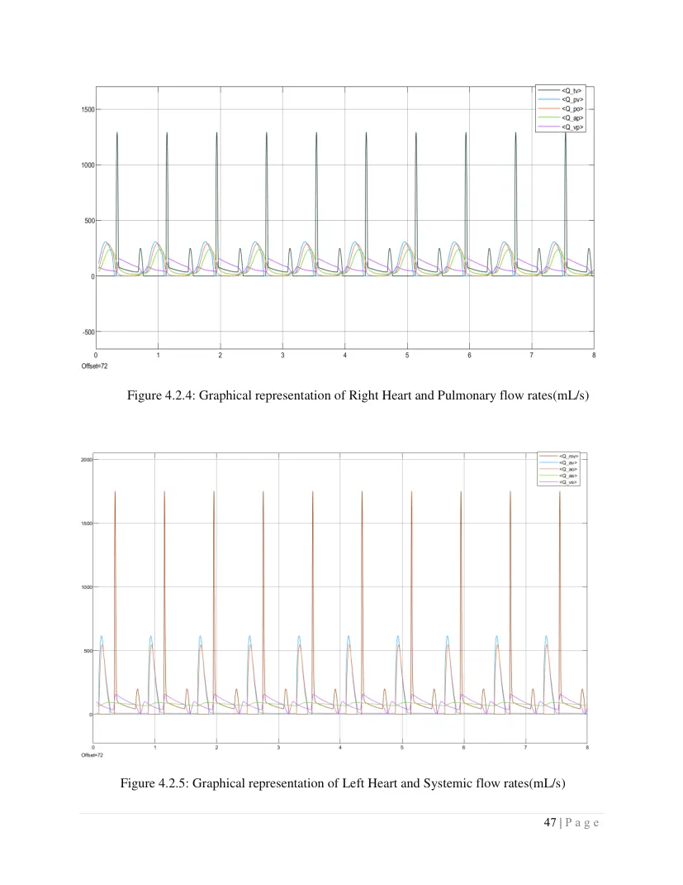

COMPONENT 01
Chambers & valves
Four cardiac chambers and four modeled one-way valves determine filling and ejection pathways.
From cardiac chambers and vascular networks to pressure–volume relationships: an interactive interpretation of a documented cardiovascular system simulation.
The source report documents a cardiovascular model in MATLAB/Simulink that combines chamber dynamics, cardiac valves, pulmonary circulation and systemic circulation. The model uses pressure, flow and volume relations to represent coupled cardiovascular behavior.
Cardiovascular resistance, compliance, inertance and chamber elastance supply the conceptual basis for its subsystem architecture. This site separates the source project's reported simulation outputs from its own illustrative learning module.
A schematic route through the left and right cardiac subsystems shows how blood flow connects the pulmonary and systemic pathways.
Select any animated connection or drag a pink handle to examine the blood-flow pathway.
Animated direction follows the modeled circulation. Animation speed responds to the heart-rate control.
Four cardiac chambers and four modeled one-way valves determine filling and ejection pathways.
Systemic and pulmonary vessel properties link pressure differences with compartmental flows.
Cardiac activation and pressure–volume relationships characterize cyclic behavior.
The controls below visualize cardiac output and an idealized ventricular pressure–volume cycle. They are an independent educational example, not a new execution of the original Simulink project.
For education only. Values are not patient measurements, a physiological diagnostic model or a full multi-compartment numerical solution.
Simplified cycle geometry; cardiac output = heart rate × stroke volume. End-systolic volume = end-diastolic volume − stroke volume.
These charts are generated interactively from simplified physiological relationships. They respond to the controls in the Interactive Lab above and are not claimed as reproduced Simulink outputs.
Illustrative pressure variation across one normalized cardiac cycle.
End-diastolic volume and stroke volume determine the illustrative volume range.
Flow shape is normalized and illustrative; it is not a directly calculated vascular flow rate.
Methodological boundary: these plots are independently generated educational examples. They are not digitized patient measurements, original Simulink model executions or validated clinical predictions.
The source report's Simulink subsystems and simulation outputs are retained for technical reference. The primary interactive network and charts appear above, while original documentation is organized by evidence type below.













The report provides equations, visual subsystem definitions and output plots. The native Simulink project, solver configuration, complete parameter tables and exported datasets would be necessary to reproduce the reported simulation independently. A separate step-by-step reproducibility roadmap is available in the repository.
Explore repository ↗